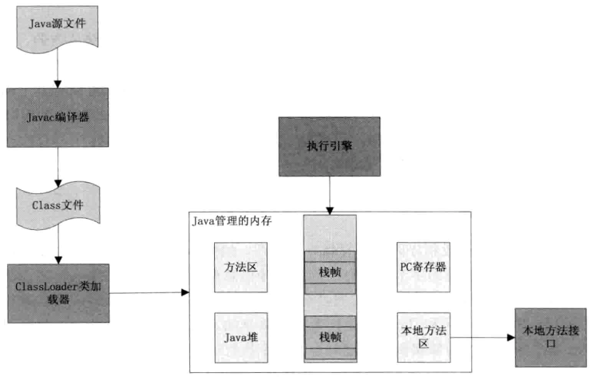
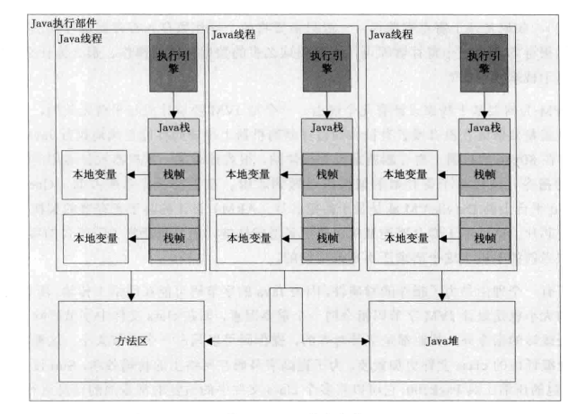

前言
JVM体系结构
JVM的体系结构是如何设计的?
何谓JVM
JVM的全称是Java Virtual Machin(Java虚拟机),它通过模拟一个计算机来达到一个计算机锁具有的计算功能
以计算机为中心来看计算机的体系结构可以分为如下几个部分
1. 指令集: 这个计算机所能识别的机器语言的命令集合
2. 计算单元: 即能够识别并且控制指令执行的功能模块
3. 寻址方式: 地址的位数,最小地址和最大地址范围,以及地址的运行规则
4. 寄存器定义: 包括操作数寄存器,变址寄存器,控制寄存器等的定义,数量和使用方式
5. 存储单元: 能够存储操作数和保存操作结构的单元,如内核级,内存和磁盘等
什么是指令集?指令集的作用?
所谓指令集就是在CPU用来计算和控制计算机系统的一套指令的集合,
每一种新型的CPU在设计时都规定了一系列与其他硬件电路配合的指令系统,而指令集的先进与否也关系到CPU的性能发挥,它是体现CPU性能的一个重要标志.
在当前计算机中有哪些指令集?
从主流的体系结构上分为精简指令集(Reduced Instruction Set Computing,RISC)和复杂指令集(Complex Instruction Set Computing,CISC),
当前我们普遍使用的桌面操作系统中基本都是CISC,如x86架构的CPU都使用复杂指令集,除了这两种指令集之外Inter和AMD公司还在它们的基础上开发出了很多扩展指令集,如MMX(Multi Medie eXtension,多媒体扩展指令)使的在处理多媒体数据时性能更强,还有AMD公司为提供3D处理性能开发的3DNow指令集等.
指令集与汇编语言有什么关系?
指令集是可以直接被机器识别的机器码,也就是它必须以二进制格式存在于计算机中,而汇编语言是能够被人识别的指令,汇编语言在顺序和逻辑上是与机器指令一一对应的,换句话说,汇编语言是为了让人能够更容易的记住机器指令而使用的助记符,每一条汇编指令都可以直接翻译成一个机器指令
指令集与CPU架构有何联系?如Inter与AMD的CPU的指令集是否兼容?也就是CPU的架构是否会影响指令集?
答案都是肯定的,汇编语言中都是对寄存器和段的直接操作的命令,寄存器和段都是架构的一部分,
所以不同的芯片架构设计一定对应不同的机器指令结合,但是不同的芯片厂商往往都会采用兼容的方式来兼容其他不同架构的指令集,
JVM和实体机到底有何不同呢?
1. 一个抽象规范,这个规范就约束了JVM到底是什么,它有哪些组成部分,这些抽象的规范都在The Java Virtual Machine Specification中详细描述了
2. 一个具体的实现,所谓具体的实现就是不同的厂商按照这个抽象的规范用软件或者硬件结合的方式在相同或者不同的平台上的具体的实现
3. 一个运行中的实例,当用其运行一个Java程序时,它就是一个运行中的实例,每个运行中的Java程序都是一个JVM实例
JVM和实体机一样也必须有一套合适的指令集,这个指令集能够被JVM解析执行,这个指令集我们称为JVM字节码指令集,符合class文件规范的字节码都可以被JVM执行.
JVM体系结构详解
JVM的结构基本由4部分组成:
1. 类加载器:在JVM启动或者在类运行时将需要的class加载到JVM中
2. 执行引擎:执行引擎的任务是负责执行class文件中包含的字节码指令,相当于实际机器上的CPU
3. 内存区:将内存划分成若干个区以模拟实际机器上的存储,记忆和调度功能模块,如实际机器上的各种功能的寄存器或者PC指针的记录器等
4. 本地方法调用: 调用C或C++实现的本地方法的代码返回结构

类加载器
每个被JVM装载的类型都有一个对应的java.lang.Class类的实例来表示该类型,该实例可以唯一表示被JVM装载的class类,要求这个实例和其他类的实例一样都存放在Java的堆中
执行引擎
执行引擎是JVM的核心部分,执行引擎的作用就是解析JVM字节码指令,得到执行结果,在(Java虚拟机规范)中详细的定义了执行引擎遇到每条字节码指令时应该处理什么,并且应该得到什么结果,但是并没有规定执行引擎应该如何或采取什么方式处理而得到的这个结果.
执行引擎也就是执行一条条代码的一个流程,而代码都是包含在方法体内的,所以执行引擎本质上就是执行一个个方法所串起来的流程,对应到操作系统中一个执行流程是一个Java进程还是一个Java线程呢?很显然是后者,因为一个Java进程可以有多个同时执行的执行流程,这样说来每个Java线程就是一个执行引擎的实例,那么在一个JVM实例中就会同时有多个执行引擎在工作,这些执行引擎有的在执行用户的程序,有的在执行JVM内部的程序(如Java垃圾收集器)
Java内存管理
执行引擎在执行一段程序时,需要存储一些东西, 如操作码需要的操作数,操作码的执行结果需要保存,class类的字节码还有类的对象等信息都需要在执行引擎执行之前就准备好,
如上图中可以看出一个JVM实例会有一个方法区,Java堆,Java栈,PC寄存器和本地方法区,其中方法区和Java堆是所有线程共享,也就是可以被所有的执行引擎实例访问,每个新的执行引擎实例被创建时会为这个执行引擎创建一个Java栈和一个PC寄存器,如果当前正在执行一个Java方法,那么在当前的这个Java栈中保存的是该线程中方法调用的状态,包括方法的参数,方法的局部变量,方法的返回值以及运算的中间结果等,而PC寄存器会执行即将执行的下一条指令
JVM工作机制
机器如何执行代码
前面已经分析了计算机只接受机器指令,
其它高级语言首先必须经过编译器编译成机器指令才能被计算机正确执行,所以从高级语言到机器语言之间必须要有个翻译的过程,而机器语言一般都是和硬件平台密切相关的,在当前这种环境下我们所说的不同的硬件平台已经被更上一层的软件平台所代替了,这个软件平台就是操作系统,与其说不同的硬件平台的差异还不如说操作系统之间的差异,因为现在的操作系统几乎完全向用户屏蔽了硬件,所以我们说编译器和操作系统的关系非常密切会更加容易让人理解.
一个程序从编写到执行:
源代码(source)–>预处理器(preprocessor)–>编译器(compiler)–>汇编程序(assembler)–>目标代码(Object code)–> 转换器(Linker)–>可执行程序(executables)
除了源代码和最后的可执行程序,中间所有环节都是由现代意义上的编译器统一完成
JVM为何选择基于栈的架构
JVM执行字节码指令是基于栈的架构,所有的操作数必须先入栈,然后根据指令中的操作码选择从栈顶弹出若干个元素进行计算后再将结果压入栈中.JVM中每个方法调用时,就会给这个方法分配一个本地变量集
JVM为何要基于栈来设计的理由
1. JVM要设计成与平台无关的,而平台无关性就是要保证在没有或者有很少的寄存器的机器上也要同样能正确的执行Java代码.
2. 为了指令的紧凑性,因为Java的字节码可能在网络上传输,所以class文件的大小也是设计JVM字节码指令的一个重要因素,操作码可以只占一个字节大小,这都是为了尽量让编译后的class文件更加紧凑,提高字节码在网络上的传输效率,Sun设计了一个Jar包的压缩工具Pack200,它可以将多个class文件中的重复的常量池的信息进行合并,如一般在每个Class文件中都含有”L/java/lang/String”,那么多个class文件中的常量就可以共用,从而起到减少数据量的作用.
执行引擎的架构设计
每当创建一个新的线程时,JVM会为这个线程创建一个Java栈,同时会为这个线程分配一个PC寄存器,并且这个PC寄存器会指向这个线程的第一行可执行代码,每当调用一个新方法时会在这个栈上创建一个新的栈帧数据结构,这个栈帧会保留在这个方法的一些元信息,如在这个方法中定义的局部变量,一些用来支持常量池的解析,正常方法返回及异常处理机制等.

JVM在调用某些指令时,可能需要使用到常量池中的一些常量,或者是获取常量代表的数据或者这个数据指向的实例化对象,而这些信息都存储在所有线程共享的方法区和Java堆中.
总结
该章主要讲解了JVM的执行引擎执行JVM指令的过程,实际上JVM的设计非常复杂,
包括JVM在执行字节码时如何自动优化这些字节码,并将它们再编译成本地代码,也就是JIT技术,这个技术在我们执行测试时可能会有影响,如果你的程序没有经过充分的”预热”,那么得出的结果可能会不准确,例如,JVM在执行程序时会记录某个方法的执行次数,如果执行的次数到一个阈值(客户端一般是1500次,服务器一般是10000次)时JIT就会编译这个方法为本地代码.